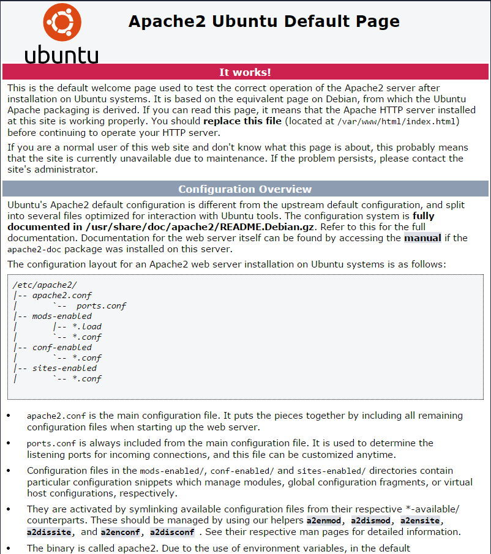
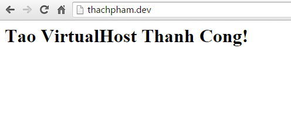

Install Apache (Ubuntu)
Tên phần mềm Apache trên Ubuntu sẽ là apache2 nên chúng ta sẽ cài đặt với lệnh sau:
sudo apt-getinstallapache2
Nó có hỏi Y/N thì cứ ấn Y rồi Enter nha.
Cài đặt xong thì truy cập vào địa chỉ IP của máy chủ (localhost), bạn sẽ thấy trang chào mừng của Apache như thế này:

Ở trang chào mừng này, bạn nên đọc qua để biết đường dẫn và cấu trúc các thư mục cấu hình Apache trên Ubuntu. Còn nếu đọc khó hiểu thì ở dưới đây mình sẽ có giải thích.
Cấu trúc thư mục cấu hình Apache trên Ubuntu
Mặc định trên Ubuntu, thư mục chứa các thiết lập của Apache sẽ nằm trong thư mục /etc/apache2. Trong thư mục đó, nó có một số thư mục và file cấu hình như sau:
- conf-available/ – Thư mục này sẽ chứa các file thiết lập cấu hình sẵn của Apache trên Ubuntu, nhưng các thiết lập trong đây sẽ chưa được áp dụng vì Ubuntu không load thiết lập cấu hình trong thư mục này.
- conf-enabled/ – Thư mục chứa các file thiết lập cấu hình của Apache trên Ubuntu đang được bật. Hãy hiểu là nếu thư mục này có một liên kết tượng trưng (symlink) qua một file module nào đó bên thư mục conf-available thì nó sẽ được bật.
- mods-available/ – Thư mục chứa các file từng module của Apache trên Ubuntu nhưng chưa được bật.
- mods-enabled/ – Thư mục chứa các file từng module của Apache trên Ubuntu đang được bật.
- site-available/ – Thư mục chứa file cấu hình VirtualHost của Apache trên Ubuntu nhưng chưa được bật.
- site-enabled/ – Thư mục chứa file cấu hình VirtualHost của Apache trên Ubuntu đang được bật.
- apache2.conf – File cấu hình Apache trên Ubuntu.
- envvars – File thiết lập các biến với giá trị sẵn để sử dụng trong các file cấu hình.
- magic – File thiết lập của module mod_mime_magic trên Apache.
- ports.conf – File cấu hình cổng mạng của Apache (mặc định là port 80).
Thư mục gốc chứa dữ liệu website của Apache trên Ubuntu
Mặc định, Apache trên Ubuntu sẽ sử dụng thư mục /var/www/html để chứa dữ liệu website gốc (load bằng IP hoặc hostname). Khi bạn vào đây sẽ thấy một file index.html, đó chính là file giao diện chào mừng mà bạn đã thấy ở trên.
Thêm VirtualHost (thêm domain) vào Apache trên Ubuntu
Cách thêm VirtualHost của Apache trên Ubuntu có sẽ hơi khác một chút với cách thêm VirtualHost trên CentOS.
Trước tiên, chúng ta cũng cần tạo cho nó một thư mục chứa dữ liệu cho domain cần thêm vào.
mkdir -p /home/thachpham.dev/public_html mkdir -p /home/thachpham.dev/log
Sau đó chúng ta cần copy file /etc/apache2/sites-available/000-default.conf ra một file mới chứa cấu hình của domain cần thêm vào (thachpham.dev) ở /etc/apache2/sites-available/thachpham.dev.conf.
cp /etc/apache2/sites-available/000-default.conf /etc/apache2/sites-available/thachpham.dev.conf
Lưu ý: Có thể file cấu hình mặc định của bạn không phải tên là default mà là “000-default.conf” nên tốt nhất bạn nên vào thư mục /etc/apache2/sites-available/ để xem rồi copy cho đúng.
Bây giờ hãy mở file /etc/apache2/sites-available/thachpham.dev.conf lên và sửa nội dung trong đó cho nó gọn hơn như thế này:
|
01
02
03
04
05
06
07
08
09
10
11
12
13
14
15
16
17
18
19
20
21
22
23
24
25
26
27
28
29
30
31
32
33
|
<VirtualHost *:80>
ServerName thachpham.dev
ServerAlias www.thachpham.dev
ServerAdmin contact@thachpham.com
DocumentRoot /home/thachpham.dev/public_html
<Directory /home/thachpham.dev/public_html>
Options FollowSymLinks
AllowOverride All
Order allow,deny
Allow from all
Require all granted
</Directory>
# Available loglevels: trace8, ..., trace1, debug, info, notice, warn,
# error, crit, alert, emerg.
# It is also possible to configure the loglevel for particular
# modules, e.g.
LogLevel error
ErrorLog /home/thachpham.dev/log/error.log
CustomLog /home/thachpham.dev/log/access.log combined
# For most configuration files from conf-available/, which are
# enabled or disabled at a global level, it is possible to
# include a line for only one particular virtual host. For example the
# following line enables the CGI configuration for this host only
# after it has been globally disabled with "a2disconf".
#Include conf-available/serve-cgi-bin.conf
</VirtualHost>
# vim: syntax=apache ts=4 sw=4 sts=4 sr noet
|
Nhớ thay:
- SererName – Domain website cần thêm vào.
- ServerAlias – Sử dụng một tên domain khác thay thế, hay còn gọi là Parked Domain nếu bạn đã từng sử dụng qua cPanel đó.
- DocumentRoot – Đường dẫn tới thư mục chứa dữ liệu website của domain này mà ta đã tạo ở trên.
- ErrorLog – Đường dẫn tới thư mục log đã tạo ở trên cho domain này.
- CustomLog – Tương tự ErrorLog nhưng sẽ lưu log lại các lượt truy cập với file là access.log.
Sau đó chúng ta gõ lệnh sau để nó tự động tạo ra một symlink của file này vào thư mục sites-enabled để bật nó lên.
a2ensite thachpham.dev
|
Hãy nhớ rằng, thachpham.dev.conf là tên file cấu hình trong thư mục sites-available đã bỏ đuôi .conf.
Kết quả trả về:
root@vps103534:~# a2ensite thachpham.dev
Enabling site thachpham.dev.
To activate the new configuration, you need to run:
service apache2 reload
|
Gõ lệnh sau để khởi động lại Apache.
service apache2 restart
|
Bây giờ nếu bạn truy cập domain vừa thêm vào nó sẽ hiển thị ra lỗi 403 do thư mục của domain chứa có tập tin index để nó load. Hãy tạo ra một file index.html với nội dung sau và upload vào thư mục public_html của domain vừa thêm.
|
01
02
03
04
|
<
html
>
<
head
></
head
>
<
body
><
h1
>Tao VirtualHost Thanh Cong! </
h1
></
body
>
</
html
>
|
Kết quả:

Nếu bị lỗi 500
Nếu bạn vào website mà bị lỗi 500 (dễ gặp ở Ubuntu 10.04 32-bits), hãy mở lại file cấu hình virtualhost của bạn và xóa đoạn này đi:
|
01
02
03
|
Order allow,deny
Allow from all
Require all granted
|
Bật module mod_rewrite
Nếu bạn sử dụng WordPress sau này hay các website khác có sử dụng mod_rewrite để ghi lại đường dẫn thì phải bật module này lên. Ở phần thêm VirtualHost, chúng ta đã thêm AllowOverride All vào thiết lập thư mục gốc của domain rồi, nhưng chúng ta cũng cần bật module rewrite lên nữa. Hãy gõ lệnh sau:
a2enmod rewrite
|
Và khởi động lại Apache
service apache2 restart
|
------------------------------------------------------------------------------------------------
Phân quyền thư mục/tập tin cho Apache và PHP
Mặc định trên Ubuntu, Apache và PHP sẽ sử dụng user www-data để truy cập và sử dụng các tập tin. Do vậy bạn hãy tiến hành cấp quyền sở hữu cho thư mục chứa website của bạn thành của www-data nhé.
chown
-R www-data:www-data
/home/thachpham
.dev
|
Lời kết
Như vậy là bây giờ bạn đã có một LAMP Webserver đầy đủ trên máy chủ Ubuntu rồi đó. Và bạn có nhận ra là khi làm việc trên Ubuntu như cài các software, cài module sẽ thấy dễ hơn trên các hệ điều hành RHEL/CentOS không? Nếu bạn muốn sử dụng NGINX Webserver (LEMP) trên Ubuntu thì có thể xem tại đây.
sudo service apache2 stop
cd /etc/apache2/sites-available/
sudo cp 000-default.conf bak.000
sudo gedit 000-default.conf (change to below)
sudo service apache2 start
#sudo adduser $USER www-data
#sudo chown -R www-data:www-data /data/program/www
#sudo chmod -R 775 /data/program/www
sudo update-rc.d apache2 disable (stop apache2 from run when startup)
Changed file:
<VirtualHost *:80> ServerAdmin webmaster@localhost DocumentRoot /data/program/www/webapps
<Directory /data/program/www/webapps> Options FollowSymLinks AllowOverride All Order allow,deny Allow from all Require all granted </Directory>
ErrorLog /data/program/www/logs/error.log CustomLog /data/program/www/logs/access.log combined </VirtualHost>
Change following lines:
export APACHE_RUN_USER=www-data
export APACHE_RUN_GROUP=www-data
END
sudo systemctl status apache2
sudo systemctl stop apache2
sudo apt-get remove apache2